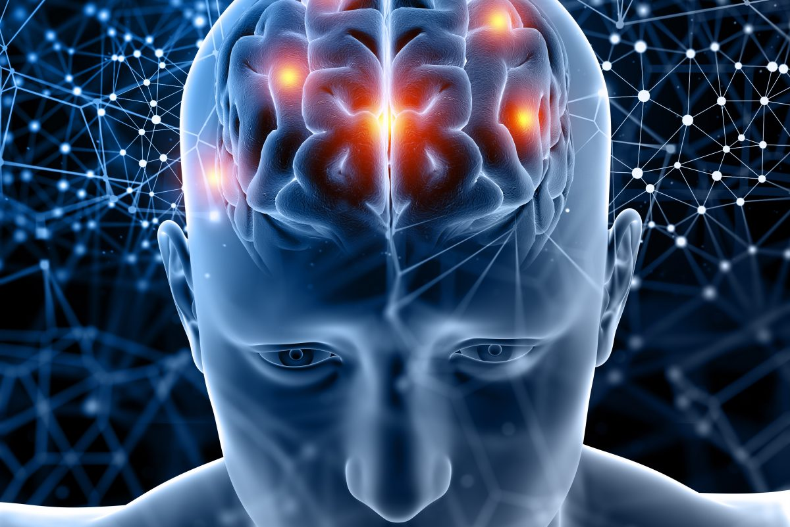

Sinir Sistemi
Sinir sistemi, vücuttaki tüm sistemlerin düzenli ve uyumlu bir şekilde çalışmasını sağlar. Uyarıların alınması, değerlendirilmesi ve tepki oluşturulmasında görev alır.
Sinir sistemi; beyin, omurilik ve sinirlerden oluşur ve vücudun kontrol merkezidir.
Sinir Sisteminin Yapıları
Sinir sistemi iki ana bölümden oluşur: merkezi sinir sistemi ve çevresel sinir sistemi.
Görevleri
- Uyarıları almak ve değerlendirmek
- Kas ve bezlerin çalışmasını sağlamak
- Vücut içi dengeyi (homeostazi) korumak
- Refleks hareketlerini yönetmek
Sinir Sisteminin Önemi
Sinir sistemi olmadan vücut çevresel değişikliklere tepki veremez. Bu nedenle sinir sistemi, yaşamın devamı için hayati öneme sahiptir.
Sinir Sistemi Bölümleri ve Görevleri (Özet Tablo)
| Bölüm | Görevi |
|---|---|
| Beyin | Düşünme, öğrenme ve istemli hareketleri yönetir |
| Omurilik | Refleksleri yönetir ve beyin ile organlar arasında iletişim sağlar |
| Sinirler | Uyarıların vücut içinde iletilmesini sağlar |
Sık Sorulan Sorular
Sinir sistemi neden önemlidir?
Vücudun kontrol ve koordinasyonunu sağladığı için hayati öneme sahiptir.
Sinir sistemi hangi yapılardan oluşur?
Beyin, omurilik ve sinirlerden oluşur.
Kısa Özet
Sinir sistemi, vücudun yönetim merkezidir. Tüm sistemlerin uyum içinde çalışmasını sağlar.
← Ana Sayfaya Dön